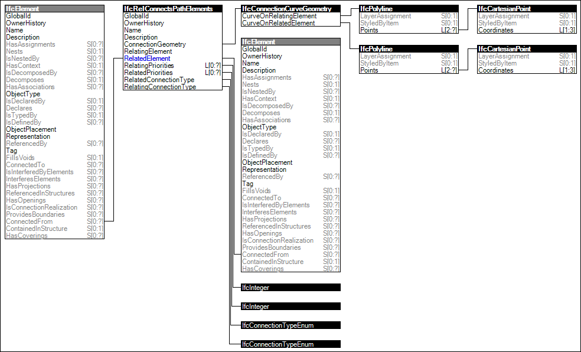

Link to this page
Link to this pageElements based on an 'Axis' representation such as walls, beams, and columns use a path connectivity relationship to indicate parameters for the connection, indicating which side takes precedence for material layers or profiles.
Figure 51 illustrates an instance diagram.
 |
Figure 51 — Path Connectivity |